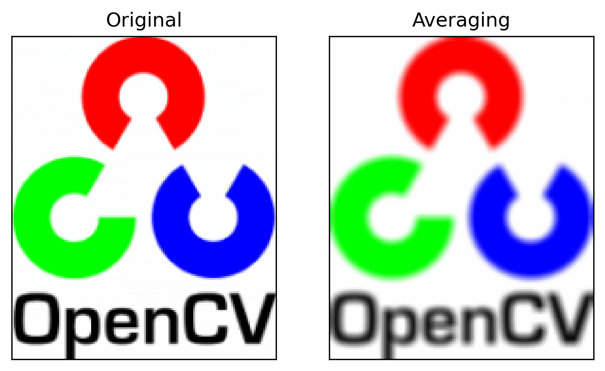
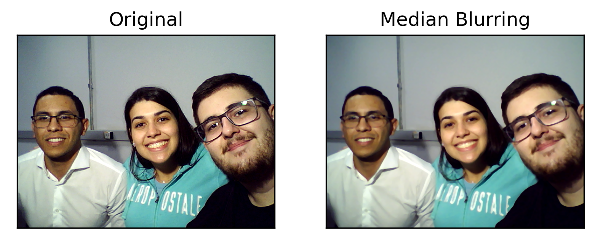
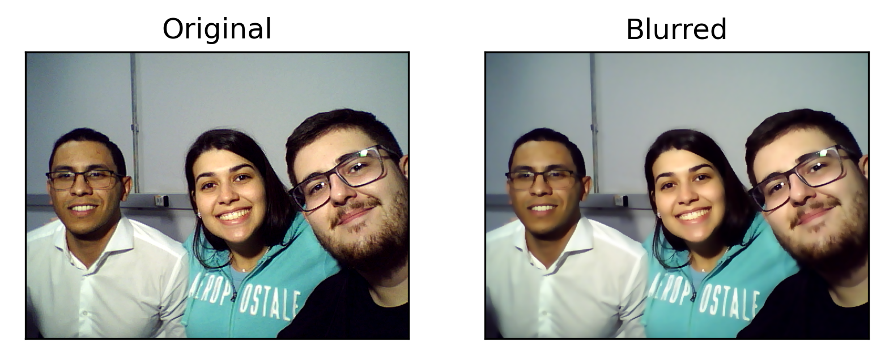

Lab 2: Filtragem de Imagens
Neste laboratório, estudamos a filtragem de imagens. A filtragems seria um processamento no sinal da imagem que resulta em um fenômeno visual. Assim como em sinais unidimensionais, as imagens também podem ser filtradas com vários filtros passa-baixa (LPF), passa-alta (HPF), entre outros. O LPF ajuda a remover ruídos, desfocar imagens, etc. Os filtros HPF ajudam a encontrar bordas nas imagens.
Os experimentos deste laboratório consistiram em reproduzir o tutorial de filtragem de imagens disponível no site da biblioteca Open-CV. Abaixo, exibimos os experimentos realizados, os resultados obtidos e o código de cada experimento respectivamente.
Convolução 2D
Este experimento consistiu em aplicar uma convolução 2D na imagem. A operação funciona da seguinte forma: mantenha o kernel de filtro de média acima de um pixel, some todos os 25 pixels abaixo deste kernel, tire a média e substitua o pixel central pelo novo valor médio. Essa operação é repetida para todos os pixels na imagem.
Abaixo, exibimos o código do experimento e os resultados obtidos:

Desfoque de imagem (suavização de imagem)
O desfoque de imagem é alcançado convolvendo a imagem com um kernel de filtro passa-baixa. Isso é útil para remover ruído. Na verdade, ele remove o conteúdo de alta frequência (por exemplo: ruído, bordas) da imagem. Portanto, as bordas são um pouco desfocadas nesta operação (existem também técnicas de desfoque que não desfocam as bordas). O OpenCV fornece quatro principais tipos de técnicas de desfoque.
1. Desfoque de Média (Averaging)
Isso é feito convolvendo uma imagem com um filtro de caixa normalizado. Ele simplesmente calcula a média de todos os pixels dentro da área do kernel e substitui o elemento central. Isso é feito pela função cv.blur() ou cv.boxFilter(). Veja abaixo os resultados e o código.

2. Desfoque Gaussiano
Nesse método, em vez de um filtro de caixa, é utilizado um kernel gaussiano. Isso é feito com a função cv.GaussianBlur(). Devemos especificar a largura e altura do kernel, que devem ser positivas e ímpares. Também devemos especificar o desvio padrão nas direções X e Y, sigmaX e sigmaY, respectivamente. Se apenas sigmaX for especificado, sigmaY será considerado igual a sigmaX. Se ambos forem fornecidos como zero, eles serão calculados a partir do tamanho do kernel. O desfoque gaussiano é altamente eficaz na remoção de ruído gaussiano de uma imagem. Veja os resultados e o código abaixo.
3. Desfoque mediano
Aqui, a função cv.medianBlur() calcula a mediana de todos os pixels dentro da área do kernel, e o elemento central é substituído por esse valor mediano. Isso é altamente eficaz contra o ruído sal e pimenta em uma imagem. Curiosamente, nos filtros mencionados anteriormente, o elemento central é um valor recém-calculado que pode ser um valor de pixel na imagem ou um novo valor. Mas no desfoque mediano, o elemento central é sempre substituído por algum valor de pixel na imagem. Isso reduz efetivamente o ruído. O tamanho do kernel deve ser um inteiro ímpar e positivo.
4. Filtragem Bilateral
O cv.bilateralFilter() é altamente eficaz na remoção de ruído, mantendo as bordas nítidas. No entanto, a operação é mais lenta em comparação com outros filtros. Já vimos que um filtro gaussiano leva em consideração a vizinhança ao redor do pixel e encontra a média ponderada gaussiana. Esse filtro gaussiano é uma função apenas do espaço, ou seja, considera pixels próximos durante o processo de filtragem. Ele não leva em consideração se os pixels têm intensidades quase iguais. Também não leva em consideração se um pixel é uma borda ou não. Portanto, ele também desfoca as bordas, o que não desejamos fazer.
O filtro bilateral também utiliza um filtro gaussiano no espaço, mas também utiliza outro filtro gaussiano que é uma função da diferença de intensidade entre pixels. A função gaussiana do espaço garante que apenas pixels próximos sejam considerados para o desfoque, enquanto a função gaussiana da diferença de intensidade garante que apenas os pixels com intensidades semelhantes ao pixel central sejam considerados para o desfoque. Dessa forma, ele preserva as bordas, pois os pixels nas bordas terão uma grande variação de intensidade.
O conteúdo deste laboratório foi retirado do tutorial Smoothing Images, de Open-CV.